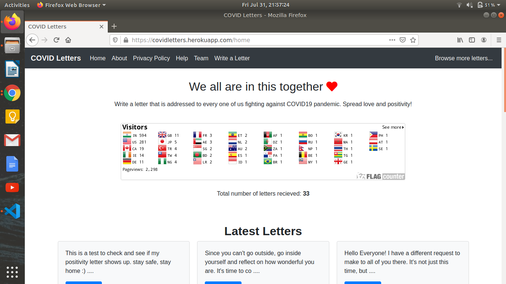
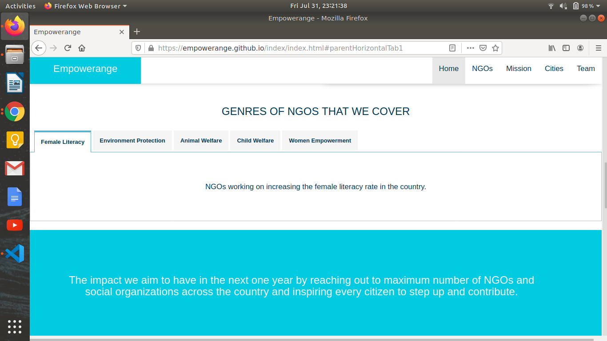
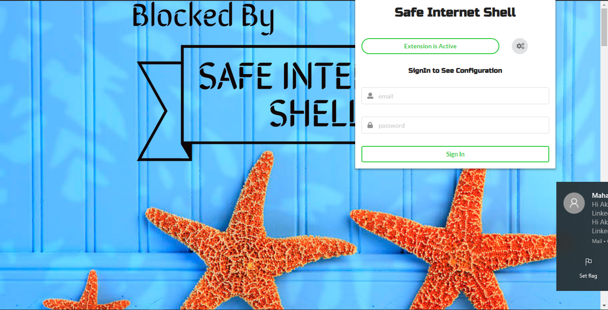
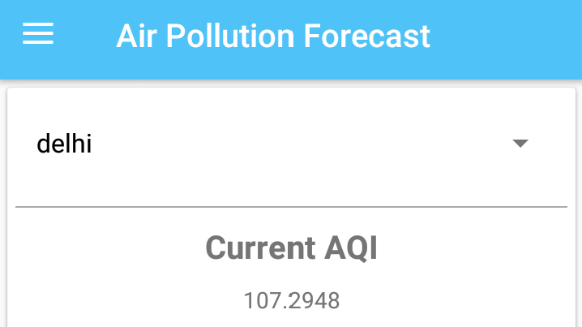
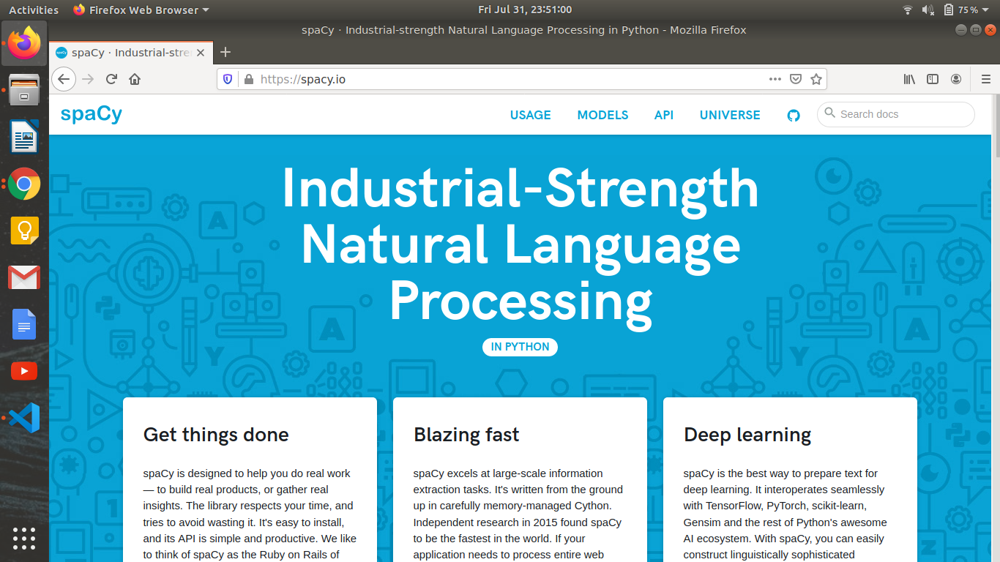

|
jaijborkar at gmail dot com I am a senior undergraduate student in Computer Engineering at Pune University, India. I'm also a former student of CIFAR Deep Learning + Reinforcement Learning Summer School hosted by Mila (Aug 2020). Presently, I work with Dr. Pin-Yu Chen from MIT-IBM Watson AI Lab on research related to adversarial robustness of deep learning models. I'm also a co-organizer of the Trustworthy ML Initiative along with Hima Lakkaraju (Harvard University), Sara Hooker (Google Brain), Sarah Tan (Facebook), Subho Majumdar (AT&T Labs Research), and Chhavi Yadav (UCSD). Research Statement / Blog / Twitter / LinkedIn / GitHub |
|
My research interests fall in different areas of Trustworthy Machine Learning. More specifically, I'm interested in adversarial machine learning and robustness of neural networks, and privacy of machine learning models. Please contact me if you want a copy of my CV, discuss any interesting idea, collaborate on a research, or share a funny meme. |
|
September
August
July
June
April
March
For past news, please check this page. |
|
AI, why you ain't fair? : Understanding AI Bias. PyCon India 2019, Chennai, India. |
|

|
COVID Letters is a platform where every one of us can write letters to spread positivity and help others combat anxiety and loneliness during the COVID-19 pandemic. Shortlisted amongst top 15 submissions across India in a challenge conducted by Internet and Mobile Association of India (IAMAI) and UNICEF India. On Product Hunt, Devpost (submitted to COVID-19 Global Hackathon 1.0). |
|

|
Empowerange is a platform to aggregate the non-profits in the country, where the citizens can easily find different non-profits to contribute. This was my junior year mini project. It's currently a nonprofit platform. |
|

|
A browser extension that blocks search results that might be toxic for kids, along with a parental control android that application monitors various online and offline activities of kid's device (such as mobile phone) to keep the kid truly safe. |
|

|
An android application that forecasts a week-long Air Quality Index (AQI) level. |
|

Image credits: spaCy |
spaCy is an industrial strength natural language processing library. |
|
Volunteering |
|
I spend some of my free time working on my non-profit Empowerange. If you want to get involved or know more about it, or if you're a non-profit and wish to collaborate, please contact me. Alongside my projects, I also enjoy contributing to MakerGhat, a non-profit community maker-space in Mumbai. I also maintain TensVect, a GitHub organization to guide Computer Science students. I also love to volunteer for various causes. In 2018, during floods in Kerala, I helped Kerala Flood Search and Rescue team as a chat support volunteer to rescue stranded people. Here is my blog post on the same. I love music and dance, and on the folk dance side I love Garba (I have won several prizes as a garba dancer). Languages I can speak: English, Hindi, Marathi, Gujarati. |
|
Thanks to Jon Barron for the template! |